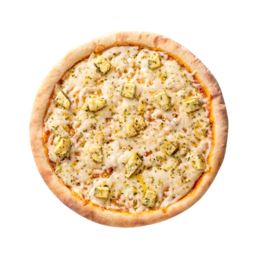
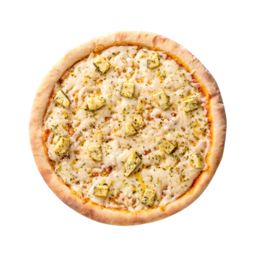

Quatro Queijos
A pizza de quatro queijos é um clássico cremoso e saboroso, geralmente com muçarela, provolone, parmesão e gorgonzola.
A pizza de quatro queijos é um clássico cremoso e saboroso, geralmente com muçarela, provolone, parmesão e gorgonzola.
